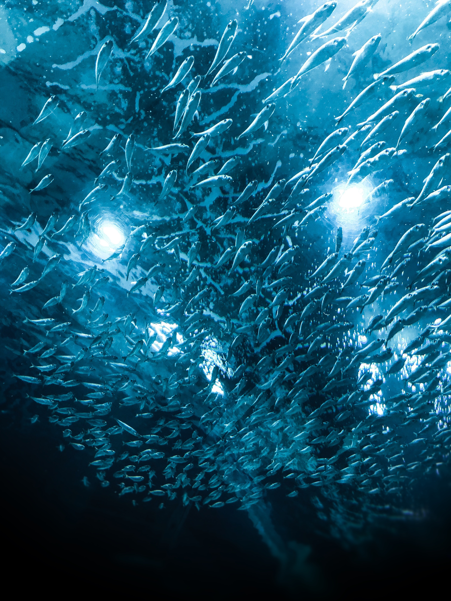

Fish
Introducing fish:
- the fish are defined as aquatic vertebrates,as they contain gills.
- clans between 10 mm and 20 meters in length.
- their weight ranges from 1.5 kg to several thousand kilograms.
Characteristics of fish:
- differ in their types shapes and sizes.
- they all share some Characteristics that help them grow in their aquatic environment.
Their two tupes of fish:
- Predatory fish.
- Pet fish.